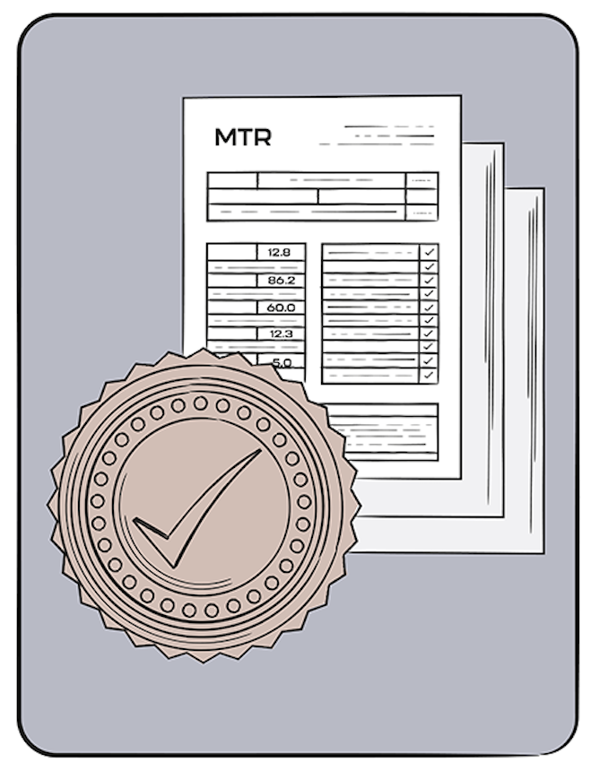

Any way, shape, or form.

Roll bending uses rotating rollers to create smooth, large-radius curves. Our advanced manual and CNC machines handle diverse profiles and complex geometries, from simple arcs to compound bends. We have bending tables which allow for large projects and complex curves.
| Capabilities | Specifications |
|---|---|
| Profiles | Round tube, square tube, angle iron, solid bars, flat bars, channels, beams, plate, custom extruded profiles |
| Materials | Carbon steel, stainless steel, aluminum, copper, brass, nickel alloys, other workable metals |
| Profile Sizes | TODO |
| Bend Radii | TODO |
| Complex Bends | Yes |
| Common Applications | Structural components, pipeline bends, architectural/artistic work, handrails, platforms, ornamental designs |
| Equipment Type | Description & Application |
|---|---|
| Manual Roll Bender | Traditional roll bending machine with manual adjustment. Operator controls roller position and material feed. Ideal for smaller projects and custom work. |
| CNC Roll Bender | Computer-controlled system with automatic roller adjustment and material feed. Provides precise, repeatable bends with excellent consistency for production runs. |
| Bend Table | Accessory device for producing multiple identical bends consistently. Works with both manual and CNC machines. |
| Roller Dies | Specialized roller shapes for creating complex profiles and specialty bends. Can be custom-made for specific applications. |


Draw bending creates precise, tight-radius bends using mandrels and specialized dies. Ideal for complex geometries, heavy pipe, and intricate compound bends. We have hundreds of dies on-hand for common sizes, or if you need something custom, we are experienced in the die creation process.
| Capabilities | Specifications |
|---|---|
| Profiles | TODO; Hollow round tube, pipe |
| Materials | Carbon steel, aluminium, copper, brass, other workable material |
| Pipe Diameter Range | 1/8" to a 6" pipe |
| Bend Radii | TODO; Wide range - hundreds of dies on-hand for standard radii |
| Complex Bends | Yes, with dies |
| Common Applications | Structural components, pipeline bends, artistic and ornamental pieces, high-precision assemblies |
| Equipment Type | Description & Application |
|---|---|
| Draw Bending Machine | Dedicated machine with chuck to grip material, mandrel support system, and die holder. Designed specifically for draw bending of pipe and tube. |
| Mandrels | Internal support tools available in various shapes and sizes to match different pipe diameters and bend requirements. Prevents wall collapse during bending. |
| Dies | Shaped tools that form the outer profile of the bend. Available for various bend radii. Hundreds of standard dies kept in inventory. |
| CNC Draw Bender | Computer-controlled draw bending machine for complex, repeatable bends with high precision and consistency. |

Custom coil bending for continuous curves and spiral geometries, as well as complex-curved coils. Typically used in industrial and chemical processing applications, automotive suspensions, and personal projects that need a gizmo or gadet.
| Capabilities | Specifications |
|---|---|
| Profiles | Round (hollow or solid), square tube, angle iron, solid bars, flat bars, channels, beams, plate |
| Materials | Stainless steel, mild steel, copper, brass, other workable metals |
| Bend Radii | Wide range depending on material and profile |
| Coil Configurations | Custom spirals, continuous curves, complex geometries |
| Common Applications | Gizmos & gadgets, cooktop burners, industrial/chemical processing equipment |
| Equipment Type | Description & Application |
|---|---|
| Coil Bending Machine | Specialized equipment with rotating mandrel or form. Material is fed and wrapped continuously to create spiral patterns. Pitch and diameter precisely controlled. |
| Custom Forms & Mandrels | Specialized tools designed for specific coil applications. Can be made to exact specifications for unique project requirements. |
| Variable Speed Drive | Allows precise control of winding speed and material feed rate, enabling consistent coil spacing and geometry. |

One-off and low-run custom components for unique applications. Whether you need a single precision piece or a small batch of specialty components, we can design and manufacture exactly what you need.
| Service Type | Description |
|---|---|
| Custom Bends | Single or small-batch custom bends in any profile, material, and radius your project requires |
| Prototype Components | First-article prototype pieces for equipment testing and validation |
| Small Production Runs | Short-run fabrication (5-100 pieces) without high setup costs |
| Complex Geometries | Unusual bends, multi-directional curves, and specialized designs |
| Expert Consulting | Work with our team to develop feasible solutions for challenging designs |
We maintain an inventory of standard bends, transition pieces, and pipeline stock that are ready to ship. Perfect for projects with quick timelines or for customers who need standardized or common bends.
We stock transition pieces (typically 1000mm long) in common sizes and thicknesses for expedited delivery. These custom-machined pieces serve as fittings and are available in standard configurations for quick turnaround projects.
| Material | Profile | Stocked Lengths |
|---|---|---|
| Carbon Steel | TODO SIZE | TODO LENGTHS |
| Stainless Steel | TODO SIZE | TODO LENGTHS |
| Material | Profile | Stocked Bend Radii | Stocked Lengths |
|---|---|---|---|
| Carbon Steel | Pipe, tube, angle iron TODO | TODO SIZE | TODO LENGTHS |
| Stainless Steel | Pipe, tube, bars - popular diameters | TODO SIZE | TODO LENGTHS |
| Aluminum | Tube, bar, channel - standard sizes | TODO SIZE | TODO LENGTHS |
| Copper & Brass | Tube and bar stock - selected sizes | TODO SIZE | TODO LENGTHS |
Note: Contact us for current stock availability on specific sizes and materials. We regularly update our inventory based on customer demand.
Many customers want start-to-finish manufacturing for simplicity, saved costs, and efficient project completion! We offer a full-service fabrication and machine shop capabilities to complement bending services, so projects are ready for installation. We handle everything from simple cuts to complex assemblies.
| Service | Description |
|---|---|
| CNC Machining | Precision computer-controlled turning, milling, and drilling |
| Turning | Cylindrical work - facing, threading, profiling |
| Welding | MIG, TIG, and structural welding with full NDE/testing |
| Grinding & Finishing | Surface preparation, deburring, and finishing operations |
| Drilling & Tapping | Precision hole work with thread creation |
| Cutting Services | Plasma, oxy-fuel, and mechanical cutting |
| Service | Description | Typical Applications |
|---|---|---|
| Custom Assemblies | In-house fabrication of complete assemblies to your specifications, ready for installation | Industrial chemical processing, Architectural structural assemblies, Davit arms |
| Transitioned Ends | Custom-machined transition pieces on pipe bends and short pieces of pipe to serve as fittings | Pipe connections, custom fittings, expedited assembly |
| Service | Description | Typical Applications |
|---|---|---|
| Paint Application | Custom paint finishing for protection and aesthetics | Industrial, architectural, and decorative applications |
| Powder Coating | Durable powder coating for enhanced finish and corrosion protection | Outdoor equipment, structural components, architectural elements |
| Galvanizing | Hot-dip galvanizing for superior corrosion protection and long-term durability | Infrastructure, outdoor structures, long-term durability requirements |
| Coatings & Insulation | Specialized coatings and insulation systems for thermal and corrosion protection (see Coatings & Insulation section) | Temperature-sensitive applications, pipeline systems, specialized environments |

Some projects require coatings and/or insulation to meet project requirements and acquire certifications. Compass Bending stocks pipe with common coatings and insulation, and has extensive experience with quality assurance, patching, and certifications.
| Product | Manufacturer | Max Service Temperature |
|---|---|---|
| Protal 7200 (Preferred) | Denso | 85°C / 185°F |
| Scotchkote 134 | 3M | 113°C / 235°F |
| Protal 7900 | Denso | 121°C / 250°F |
| Devchem 253 (Internal) | Devoe | 149°C / 300°F |
| Enviroline 415 (Internal) | Enviroline | 149°C / 300°F |
| Novolac R-200 | Novocoat | 100°C / 212°F |
| SC2200 | Novocoat | 200°C / 392°F |
| SP 2888RG | SPC | 80°C / 176°F |
| SP 3888 | SPC | 95°C / 203°F |
| SP 8888 | SPC | 150°C / 302°F |
| Product | Manufacturer | Max Service Temperature |
|---|---|---|
| RenWrap 330 (Preferred) | Renfrew | 85°C / 185°F |
| Polyken 900 | Polyken | 66°C / 150°F |
| Polyken 934 | Polyken | 66°C / 150°F |
| RenWrap 300 | Renfrew | 71°C / 160°F |
| Stopaq CZHT / HTPP System | Stopaq | 95°C / 203°F |
| Product | Manufacturer | Max Service Temperature |
|---|---|---|
| K-60 | Canusa | 60°C / 140°F |
| GTS-PE | Canusa | 100°C / 212°F |
| WPCT | Raychem | 86°C / 187°F |
| Product | Manufacturer | Max Service Temperature |
|---|---|---|
| Ultrabond RA (UBRA) | Perma-Pipe | 60°C / 140°F |
| YJ ("YJ1") | Shaw | 60°C / 140°F |
| YJ2K | Shaw | 85°C / 185°F |
| Insulation Type | Description | Outer Layer Options |
|---|---|---|
| Polyurethane Foam Half-Shells | Standard and custom thicknesses available. Available with heat trace channel. | Tape, shrink sleeves, polyurea spray (over YJ, UBRA, tape, or epoxy) |
| Process | Description |
|---|---|
| Surface Preparation | Sandblasting to SSPC-SP6 or SSPC-SP10 depending on coating requirements |
| Primer Application | Appropriate primers applied as required (e.g., prior to tape wrap) |
| Patching & Testing | All coated bends are patched if necessary and holiday tested before shipping |
| Portable Patch Kits | K60 shrink sleeves for YJ1 and UBRA; GTS-PE shrink sleeves for YJ2K and UB IIISE; Stopaq wrapping also available |
| Documentation & Specifications | Coating manufacturers' spec sheets, installation guides, and MSDS sheets on file |
| Quality Reports & Certifications | All coatings come with quality assurance inspection reports |
Note: Perma-Pipe Ultrabond IIISE (UB IIISE) coated bends are available by special request with a waiver only.

Compass Bending operates under recognized industry standards and certifications that ensure quality, safety, and compliance for every project.
Compass Bending conforms to all applicable codes and standards, including CSA, ASME/ASTM, API, and PFI. We also adhere to customer-specific procedures and specifications for code work.
| Standard/Organization | Description | Applicable Codes |
|---|---|---|
| CSA (Canadian Standards Association) | Canadian pipeline, pressure system, and structural standards | (PLACEHOLDER) Z662, Z245.17, Z245.16, Z245.11, S6, S16, A82.1 |
| ASME/ASTM | American Society of Mechanical Engineers and materials standards | (PLACEHOLDER) B16.9, B31.1, B31.3, B31.4, B31.8, Section VIII, Material specifications |
| API | American Petroleum Institute standards for oil and gas | (PLACEHOLDER) API 579, API 610, API 650 |
| PFI | Pipe Fabrication Institute welded fittings standards | (PLACEHOLDER) PFI ES-20 |
| ABSA | Alberta Boiler Safety Association standards for fabricated components | (PLACEHOLDER) ABSA Rules |
| Customer Specifications | Custom client procedures and specifications at request | (PLACEHOLDER) Per customer requirements |
We work hard at being transparent and accountable. Every project is backed by rigorous quality standards, comprehensive testing, and detailed documentation. All work is overseen by a dedicated Project Manager and Quality Assurance (QA) staff.
| Testing Type | Description |
|---|---|
| Destructive Testing | Performed for code work and critical applications as required by applicable standards |
| Non-Destructive Examination (NDE) | Comprehensive examination as required by applicable codes |
| Holiday Testing | Electrical continuity testing for all coated components to verify coating integrity |
| Dry Film Thickness (DFT) | Coating thickness measurements and verification to ensure specification compliance |
| Blast Profile Examination | Surface preparation quality verification before coating application |
| Documentation Type | Description |
|---|---|
| Mill Test Reports (MTRs) | Large database maintained on all pipe, process tube, and structural materials. Shipped with completed projects and designated customer representatives |
| Project Reports | Comprehensive reports issued upon project completion with all testing and QA results |
| Quality Assurance Records | All project and QA records maintained indefinitely for traceability and accountability |
| Non-Conformance Reports (NCRs) | Filed to address any issues with materials, suppliers, processes, or shipping. Document problems, solutions, and corrective actions |
| Quality Manual | Comprehensive in-house Quality Manual maintained for all non-code work |
| Oversight Function | Description |
|---|---|
| Project Manager | Dedicated project manager oversees every project from start to finish |
| QA Staff | Quality Assurance staff monitor all aspects of production, testing, and documentation |
| Third-Party Inspections | We welcome third-party inspectors to review work in process or upon completion |
We produce thousands of bends each year while maintaining consistent quality through modern equipment designed and built to our specifications. Post-bend heat treatment is available for specific materials and applications when required.

We manage all shipping, regardless of the product and its destination. We can arrange material pickup from anywhere – local, domestic, or international – and bring it to us for processing, with the assistance of our customs brokers and shipping department.
| Equipment | Description | Use Cases |
|---|---|---|
| Gooseneck Trailers | Our own fleet for immediate availability | Hotshot services, time-sensitive deliveries |
| Peterbilt 53-Foot High-Boy Trailer | Tall/oversized item capability | Large-scale bends, tall/oversized products |
| Dependable Carriers & Contractors | Network of reliable partners | FTL and LTL shipments on decks and in vans |
| Service Type | Description | Availability |
|---|---|---|
| Full Truck Load (FTL) | Dedicated truck shipments on decks and in vans | Local, domestic, and international |
| Less Than Truck Load (LTL) | Flexible options for smaller shipments | Local, domestic, and international |
| Hotshot Services | Time-sensitive deliveries with our gooseneck trailers | Rapid response available |
| Oversized/Wide Loads | Special handling for large items with our equipment and expertise | Alberta destinations |
| Pilot Car Services | Escort vehicles for loads requiring specialized transport | Available as needed |
| Shipping Method | Description |
|---|---|
| Collect on Your Trucks | Pick up shipments using your own transportation |
| Appointed Carriers | Arrange shipment through your designated carriers |
| Prepaid & Charged (PP&C) | We arrange and prepay shipping, charged to your account |
With the assistance of our customs brokers and shipping department, we can handle material pickup and shipment from anywhere in the world. We manage all customs and regulatory requirements to deliver processed materials to your desired destination.
Office Hours: Monday–Friday, 8:00am–5:00pm
Shipping Department: Monday–Friday, 8:00am–3:00pm (subject to change)
Note: Advance booking for loading/unloading is requested due to yard capacity.
Business hours: 8:00 AM - 4:00 PM MST
Monday-Friday
Yes, we answer our phones!
1 (403) 279-6615
1 (800) 708-7453
7320 30 Street S.E. Calgary, Alberta Canada T2C 1W2
info@compassbending.com